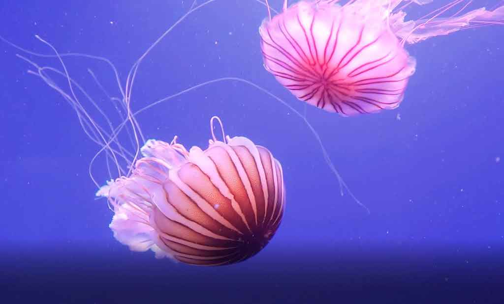

Über die Qualle
Quallen sind coole Meerestiere mit durchsichtigen Körpern und leuchtenden Farben. Sie bewegen sich durch pulsierende Bewegungen und besitzen oft lange Tentakel.
Lebensraum
Quallen leben in allen Ozeanen der Welt, besonders im Pazifik und Atlantik.